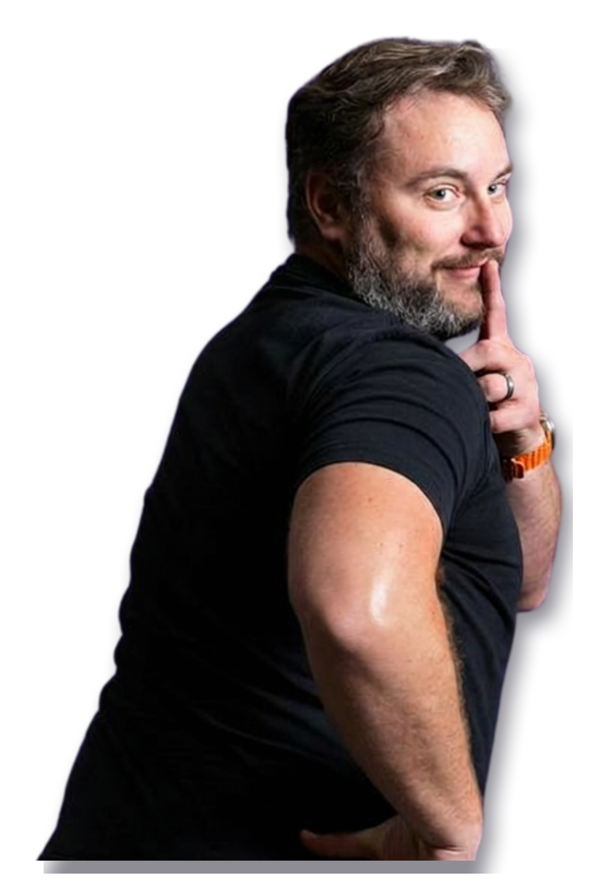
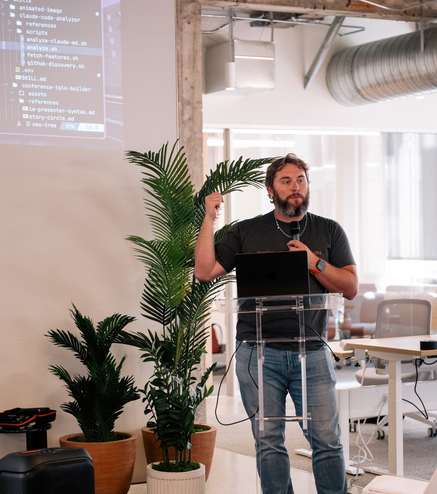

DX / AI at WorkOS
Internal systems other teams build on.
Same identity, same facts, different composition. These are north-star structures, not literal screenshots. Toggle the theme; both scenes are part of the decision.
Most human and direct. Nick and the thesis dominate; four evidence paths appear as a restrained second beat.
I build the systems, workflows, and practices that help technical teams work differently with AI—and teach them how to make it stick.

Internal systems other teams build on.
Move teams from chat to shipped practice.
AI tooling, workflows, and software craft.
From TypeScript to AI-native engineering.
Most faithful to the Single Event metaphor. Nick anchors one sparse diagram; the four paths are literal navigation.
I work where AI adoption, developer experience, and engineering practice meet.
Most editorial and subtly Zack-adjacent. Real workshop photography carries the first half; sparse evidence tracks organize the second.

I build the systems and teach the workflows that help technical teams turn AI from an experiment into how work gets done.